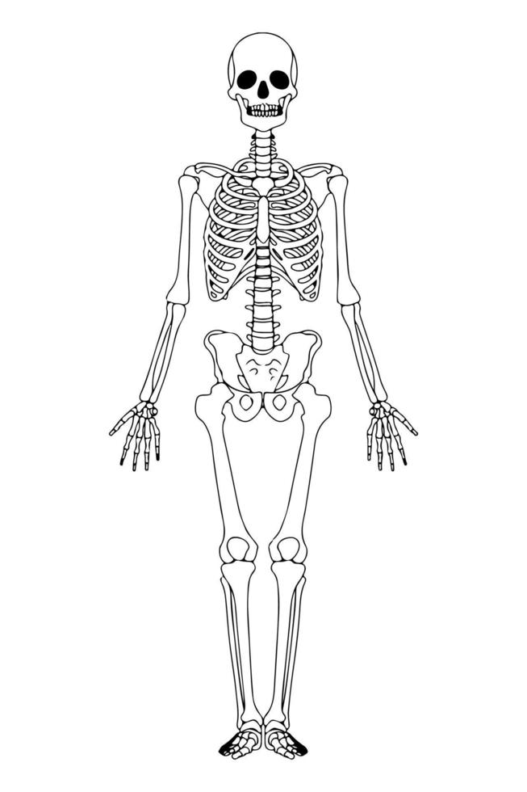

Mapa del esqueleto humano
A continuación les mostramos la estructura ósea del cuerpo humano.
Seleccione la parte del cuerpo que desea investigar:
Si desea saber la estructura de clasificación de los huesos, sus nombres y el número; le mostramos la siguiente tabla:
| Estructura | Nombre del hueso | Número |
|---|---|---|
| Craneo | Frontal | 1 |
| Craneo | Parietal | 2 |
| Craneo | Temporal | 2 |
| Craneo | Occipital | 1 |
| Craneo | Esfenoide | 1 |
| Craneo | Etmoides | 1 |
| Cara | Nasales | 2 |
| Cara | Maxilar superior | 2 |
| Cara | Malar o cigomático | 2 |
| Cara | Maxilar inferior | 1 |
| Cara | Unguis o lagrimal | 2 |
| Cara | Palatino | 2 |
| Cara | Cornetes inferiores | 2 |
| Cara | Vómer | 1 |
| Cuello | Hioides | 1 |
| Oído | Martillo | 2 |
| Oído | Yunque | 2 |
| Oído | Estribo | 2 |
| Columna vertebral o raquis | Cervical | 7 |
| Columna vertebral o raquis | Dorsal | 12 |
| Columna vertebral o raquis | Lumbar | 5 |
| Columna vertebral o raquis | Sacra | 1 |
| Columna vertebral o raquis | Cóccix | 1 |
| Torax | Esternón | 1 |
| Torax | Costilla verdadera | 14 |
| Torax | Costilla falsa | 6 |
| Torax | Costilla flotante | 4 |
| Miembros superiores | Hombro o cintura escapular | 8 |
| Miembros superiores | Húmero | 2 |
| Miembros superiores | Cúbito | 2 |
| Miembros superiores | Radio | 2 |
| Miembros superiores | Carpianos | 8 |
| Miembros superiores | Metacarpianos | 5 |
| Miembros superiores | Falanges | 14 |
| Miembros inferiores | Casera o cintura pélvica | 2 |
| Miembros inferiores | Fémur | 2 |
| Miembros inferiores | Rótula | 2 |
| Miembros inferiores | Peroné | 2 |
| Miembros inferiores | Tibia | 2 |
| Miembros inferiores | Tarsianos | 7 |
| Miembros inferiores | Metatarsianos | 5 |
| Miembros inferiores | Falanges | 14 |